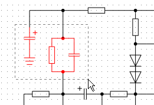
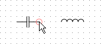
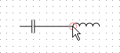

p@janouch.name
version 0.2.0,
2018-06-27
This document will guide you through the application and help to familiarize you with it. The description of tasks mainly targets the Microsoft Windows operating system, though it’s also valid for other operating systems to a certain extent.
Download the newest version of the application at the following web address: https://git.janouch.name/p/logdiag.

Figure 1: The download menu on the project site
While on the web, look for a tab entitled Releases
and click on it.
A list of versions will appear with files for download listed under
Downloads
headings. The installation file for Microsoft Windows is named
in the style of logdiag-version-Windows-x86.exe
.
The installation process is quite straight-forward. After the initial screen a license agreement is required. Next, choose a folder in which to install the application and another one for placement in the Start menu. So long as no unexpected errors have occurred, all that’s left is confirming a successful installation.
Warning: If the application is installed into a folder where a previous installation is already located, problems may arise. Although it is possible to do so, don’t try to install multiple copies parallely either, for the same reasons. Remove the current installation first, for example by using the shortcut located in the Start menu.
Each diagram consists of objects, and these are accompanied by the operations described below. To cancel any current operation, press the Escape key.
Select single objects by left-clicking on them. They will get highlighted with red color in reaction to this. To select multiple objects, hold the Shift key while clicking.

Figure 2: Selecting objects inside an area
Alternatively drag the mouse from free space within the diagram into the area, see Figure 2. Objects contained in this rectangle will be selected. The selection may later be dismissed by just clicking into free space.
Moving of objects is done by dragging them with the mouse onto the desired place. If these objects form a part of the current selection, the whole selection is moved. The selection may also be moved using cursor keys.
Remove objects either by pressing the Delete key or from the application menu.
Symbols constitute the most important kind of objects. Insert them into the diagram by choosing one from the symbol menu located on the left side of the main application window and dragging it onto the diagram where you want the symbol to be placed.
Rotate a symbol inserted into the diagram by right-clicking on it.
A point intended for creation of connections between symbols or other connections is called a terminal. To lead a connection out of it, first hover it with the mouse pointer, so it gets visibly highlighted with a circle. Then press the left mouse button and drag the pointer onto the place where you want the connection to end.

…

Figure 3: Interconnecting terminals of two symbols
When saving, ensure that the filename you’ve typed in contains the
.ldd
suffix. If not, it won’t show up in the dialog for opening diagrams.
In case you’ve already saved a file without an extension, you may fix this
situation by adding the suffix to its name.
The current version of application is not able to print directly. To print out a created diagram, you may use the PrintScreen key to capture a screenshot, then insert it to, for example, Paint, and print it from inside the graphics editor.
Similarly to the previous case, this functionality doesn’t exist yet, but it is possible to get around this limitation using a graphics editor.